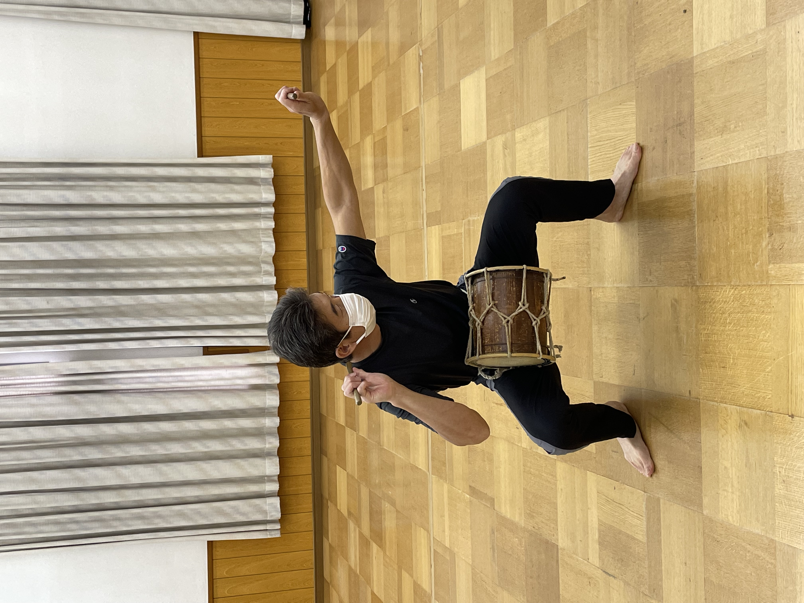
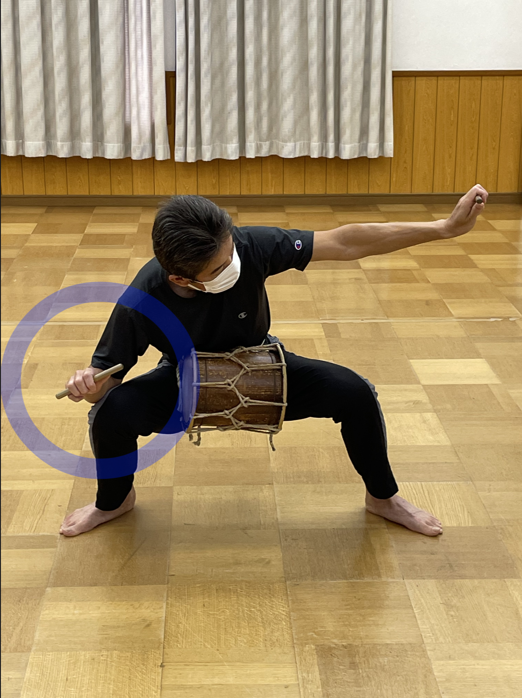
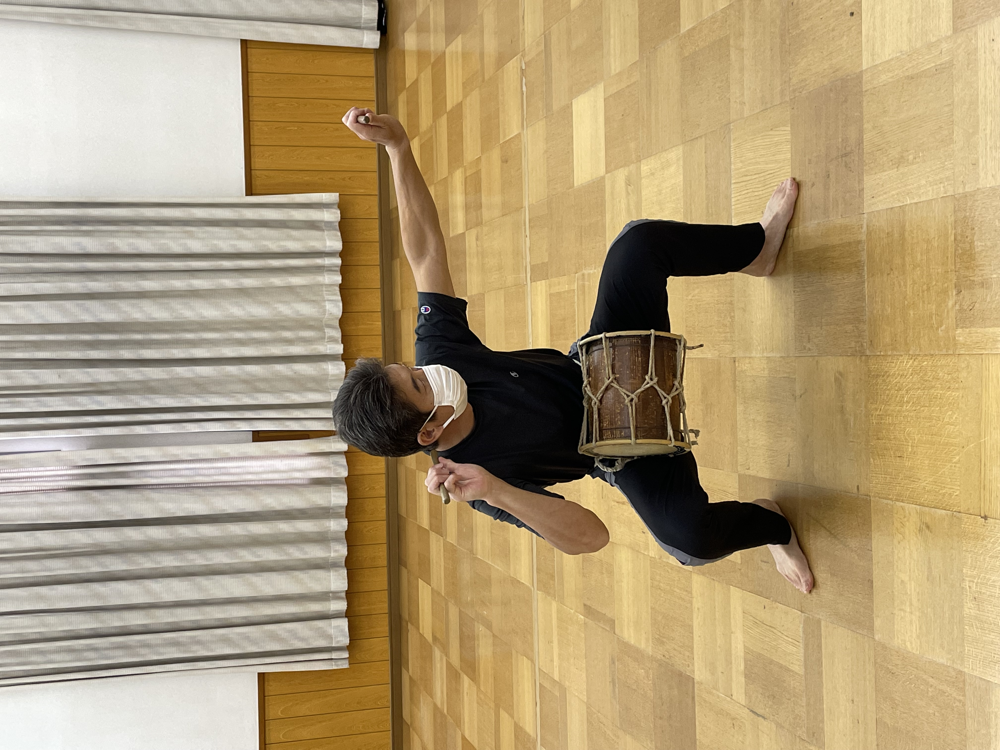
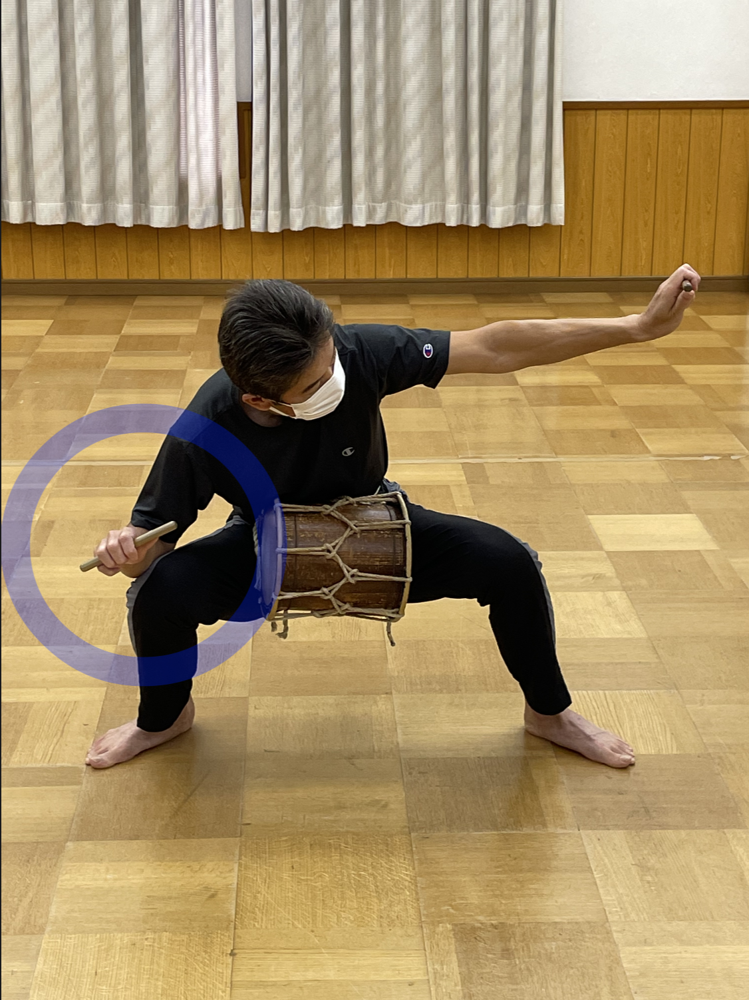

良い例
両足を開いて地面につけ、右手を顔のそばにおいて構えている。
この時、目線はバチの先を見ている。
悪い例
右手が下がってしまい、顔の側において構えていない。
この画面では正しいぶっちじめのやり方を良い例、悪い例の動画を用いて解説します。 良い例、悪い例の動画を見てちがいを理解しましょう。
良い例
両足を開いて地面につけ、右手を顔のそばにおいて構えている。
この時、目線はバチの先を見ている。
悪い例
右手が下がってしまい、顔の側において構えていない。
注目ポイント
足の上げる方向や、最後は左足を上げながらたいこをたたいている点に注目しましょう。